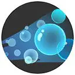
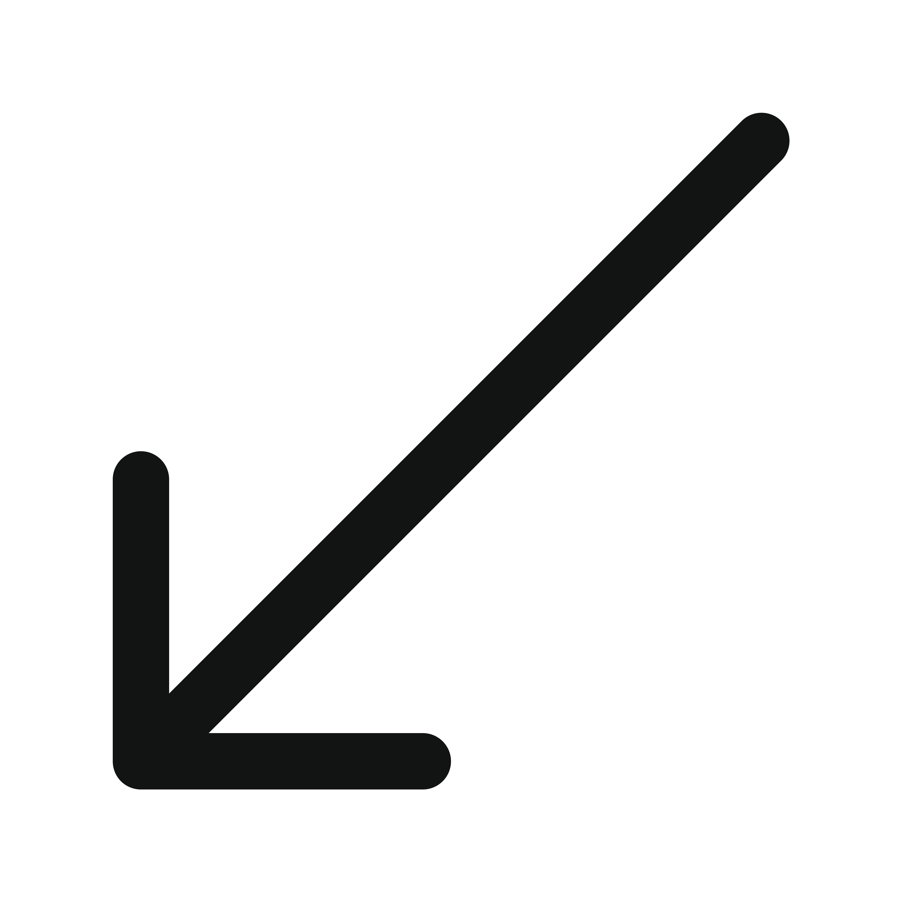
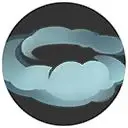

| Attaque | Icône | Description |
|---|---|---|
| Attaque de base |  |
La troisième attaque inflige des dégâts supplémentaires. Toucher à distance augmente les dégâts et ralentit la vitesse de déplacement de la cible. Au contact, les dégâts sont basés sur les PV maximum de la cible. |
| Talent | Icône | Description |
|---|---|---|
| Torrent | Lorsque les HP de ce Pokémon passent sous les 50%, ses dégâts et sa vitesse de déplacement augmentent. |
| Attaque spéciale 1 | ||
|---|---|---|
| Attaque | Icône | Description |
| Ecume |  | Projette des bulles qui infligent des dégâts et diminuent la vitesse de déplacement de l’ennemi. |


| Attaque | Icône | Description |
|---|---|---|
| Niveau 7: Sheauriken Amélioration au niveau 11 |
Envoie plusieurs shurikens d’eau. Augmente la vitesse de déplacement du lanceur et restaure des PV pour chaque shuriken touché. |
| Attaque | Icône | Description |
|---|---|---|
| Niveau 7: Surf Amélioration au niveau 11 |
Se projette dans une direction sur une vague infligeant des dégâts aux Pokémon touchés et restaurant les PV de l’utilisateur. Tuer un Pokémon ennemi réinitialise cette capacité. |
| Attaque spéciale 2 | ||
|---|---|---|
| Attaque | Icône | Description |
| Clonage |  |
Se projette vers l’avant en laissant un clone derrière lui. |
| Attaque | Icône | Description |
|---|---|---|
| Niveau 5: Reflet Amélioration au niveau 13 |
Replace rapidement le lanceur loin de sa position actuelle, laissant des illusions pour l’aider au combat. |
| Attaque | Icône | Description |
|---|---|---|
| Niveau 5: Brouillard Amélioration au niveau 13 |
 | Bondit dans une direction et dégage un nuage de fumée. Amphinobi devient invisible à l’intérieur. La prochaine Attaque de base est renforcée. |
| Capacité Unite | ||
|---|---|---|
| Attaque | Icône | Description |
| Sheauriken Géant Débloquage au niveau 9 |
Le lanceur saute dans la zone désignée avant d’attaquer les Pokémon adverses avec un shuriken d’eau géant. | |